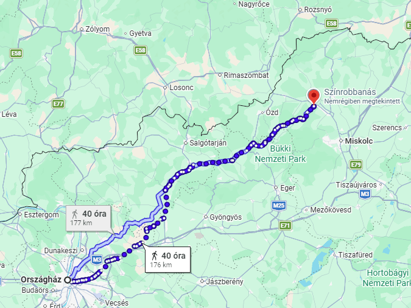

Indulás a Parlamenttől
Utazásunk Országház épületétől indul, amely Budapest egyik legismertebb nevezetessége. A Duna partján álló Parlament lenyűgöző látványt nyújt minden évszakban, ezért tökéletes kiindulópont egy hosszabb kiránduláshoz. A történelmi környezet különleges hangulatot ad az indulásnak, miközben megkezdjük utunkat Kazincbarcika felé.

Az út hangulata
Az utazás során fokozatosan magunk mögött hagyjuk a főváros nyüzsgését. Ahogy haladunk észak felé, egyre több zöld terület, kisebb település és nyugodt táj tárul elénk. Az út nemcsak a cél miatt érdekes, hanem azért is, mert közben Magyarország változatos vidékeit is megismerhetjük.
Érkezés Kazincbarcikára
Kazincbarcika egy modern és egyedi hangulatú város, amelyet sokan a „Color City” néven ismernek. A város különlegességét a színes tűzfalfestmények és az utcai művészet adják. A kreatív alkotások szinte minden utcában megjelennek, így a város egy szabadtéri galériára emlékeztet.
A Color City Szobor
Az út végállomása a híres Color City Szobor, amely a város egyik legismertebb jelképe. A szobor modern megjelenése és színes környezete jól tükrözi Kazincbarcika kreatív arculatát. Ez a hely népszerű találkozópont és kedvelt fotózási helyszín a turisták számára.
| Adatok az utazásról | |
|---|---|
| Adat | Leírás |
| Indulási hely | Országház, Budapest |
| Érkezési hely | Color City Szobor, Kazincbarcika |
| Közlekedés | Séta |
| Távolság | Körülbelül 190 km |
| Becsült sétálási idő | Körülbelül 38–40 óra folyamatos séta |
| Érintett települések száma | Körülbelül 35–45 település |
| Végállomás városa | Kazincbarcika |
Egy különleges élmény
Ez az utazás egyszerre mutatja meg Magyarország történelmi és modern oldalát. A Parlament eleganciájától a Color City művészeti világáig vezető út tele van érdekes látnivalókkal és élményekkel. Kazincbarcika bebizonyítja, hogy egy város a művészet és a közösség erejével teljesen új arculatot kaphat.